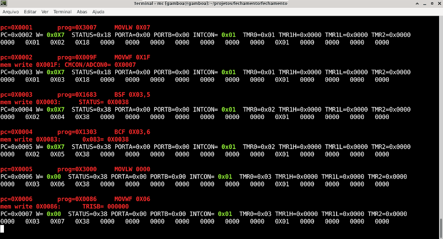
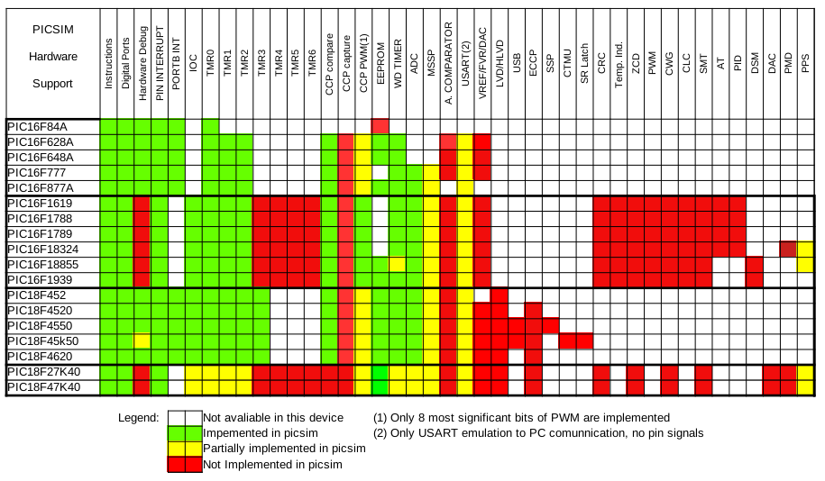

PICsim Online Help
PICsim can be used as a :
- Standalone simulator (as described below)
- Library called by other programs (as described in PICsim library docs).
PICsim simulator
Picsim is a console program simulator. To use it is necessary to enter the name of the microcontroller and the .hex file to be used.
use: ./picsim PICXXFXXX file.hex
supported processors PIC16:
PIC16F84A PIC16F628 PIC16F628A PIC16F877 PIC16F877A PIC16F648A
PIC16F777 PIC16F1619 PIC16F18855 PIC16F18324
supported processors PIC18:
PIC18F452 PIC18F4520 PIC18F4620 PIC18F4550 PIC18F45K50 PIC18F27K40
PIC18F47K40
cli commands:
b - goto breakpoint
f - goto breakpoint without print (fast)
n - run n steps
m - show memory
r - reset
h - help
q - quit

Supported Pics
